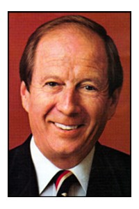

1984–1987
Anfang der 1960er Jahre lernte meine ältere Schwester Ulli ihren späteren Mann Derek Joosten auf dem Flugplatz Hahn kennen. Er war dort als GI stationiert, sie arbeitete als Sekretärin. Einige Jahre später heirateten die beiden und gingen gemeinsam nach Kalifornien, wo Derek aufgewachsen war.
Dereks Eltern Beryl und Jean lebten in Sunnyvale. Sie waren nach dem Krieg dorthin gezogen, als Kalifornien einen gewaltigen Aufschwung erlebte. Die Bay Area war damals noch weitgehend landwirtschaftlich geprägt. Südlich von San Francisco, ungefähr ab dem damals als Sommerfrische geltenden Atherton, bestimmten Obstplantagen und Viehzucht die Landschaft. San José war noch eine vergleichsweise kleine Stadt.
Beryl hatte niederländische Wurzeln, Jean, geborene Streik, stammte aus einer Familie mit polnischen Wurzeln. Beide hatten mehrere Geschwister. Besonders eng war Beryl mit seiner Schwester Jan verbunden, Jean mit ihren Schwestern Ag und Gertrude. Alle fünf kamen ursprünglich aus Wisconsin und waren in den Nachkriegsjahren nach Kalifornien gezogen. Sie ließen sich in der Gegend um Los Altos und Sunnyvale nieder, wo die Halbleiterindustrie der Gegend ein geradezu explosionsartiges Industriewachstum bescherte. Gertrude blieb unverheiratet, Jan heiratete Frank Ratajczak und Ag den ehemaligen Piloten Jim Althoff.

Nach seiner Rückkehr aus dem Krieg gründete Jim gemeinsam mit seinem früheren Pilotenkollegen Ernie Van Aspern in der Bay Area die Spirituosenkette „Ernie’s Liquors“. In den 1970er Jahren gehörten ihnen schließlich mehr als achtzig Filialen in ganz Kalifornien. Jim und Ag waren wohlhabend, lebten aber insgesamt recht bescheiden. Einen Luxus gönnte sich Jim allerdings: eine Yacht, die im Hafen von San Francisco lag. Wenn Besuch kam, ließ er es sich nicht nehmen, seine Gäste und die Familie zu einer Fahrt über die Bay einzuladen.
So kamen auch wir bei unserem Aufenthalt im Jahr 1984 in den Genuss einer solchen Ausfahrt. Später lud Jim uns noch gelegentlich zu weiteren Touren auf der Bay ein. Jim und Ag waren wunderbare und großzügige Gastgeber. Ihnen verdankten wir auch einen großen Teil der ersten Möbel für unser Haus im Sunset District.
Mit Jan und Frank Ratajczak verband uns ebenfalls eine enge Freundschaft. Frank war Handelsvertreter und eine Seele von Mensch. Beide lebten bescheiden und waren außerordentlich gastfreundlich. Jan verstand viel von Wein, und mit ihr tranken wir in ihrem hübschen Garten so manches Fläschchen. Frank blieb lieber bei Cola, jedenfalls sagte er das. Er trank sie aus einer Coladose, und zunächst war darin tatsächlich Cola. Im Laufe des Abends schenkte er sich jedoch immer wieder von uns unbemerkt Whiskey nach. Der Colaanteil nahm dabei stetig ab, während Franks Laune im gleichen Verhältnis zunahm. Zu später Stunde bestand der Inhalt der Dose schließlich nur noch aus Whiskey und Frank hatte eine ziemliche Schlagseite.
Wir lernten die Joostens als einen liebenswerten Clan kennen, der in allen Lebenslagen zusammenhielt. In der nächsten Generation blieb davon leider nicht viel übrig. Die Familie fiel mit der Zeit auseinander, und jeder ging seinen eigenen Weg. Für uns waren die Jahre von 1984 bis 1987 auch deshalb gute Jahre, weil uns die Joosten-Familie so freundlich, aufgeschlossen und großzügig aufgenommen hatte. Dafür sind wir ihnen bis heute dankbar.